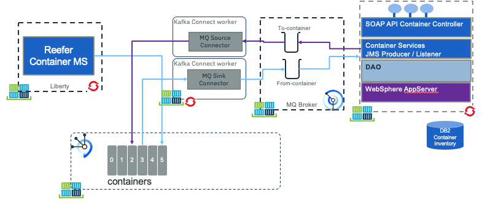
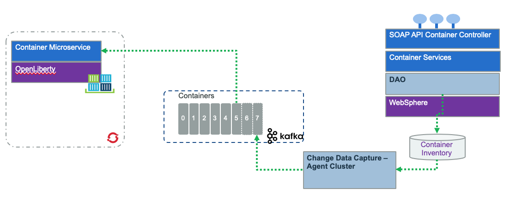

Container inventory legacy app
This project illustrates the integration of a legacy application with MQ and Kafka. The application manages the current container inventory for the shipment company, introduced in the end to end solution here.
The JEE application is a 3 tiers architecture, used to manage container inventory. As part of those containers are the Reefer ones. So the approach is to use the legacy application to keep manage the inventory but use MQ or Change Data Capture to propagate the inventory updates to the microservice world.
Component views
MQ integration
The first way to propagate data change is to have the legacy application sharing data via MQ. This is common as MQ is used as messaging services since multiple years:

- On the left of the figure, the container management microservice (implemented in a separate repository) supports the Reefer container management and events processing. In the current use case, this component is producing events to a
containerstopic defined in Kafka / Event Streams. One of those events will be container in maintenance and container out of maintenance. It is also interrested to receive new "Reefer added" to the legacy inventory so it can assign order to container. - On the right side of the figure, the
Inventory appis a JEE application managing the container inventory. We did it in Java because we can partially reuse another code from previous contribution. But the most important thing, it is considered as a legacy app, using MQ as communication layer. It could have been done in other language running on mainframe for example. This app is listening to MQ to get container maintenance messages, and publishes container added message to queues. - The
MQ source connectoris a component that gets messages from the queue, filters messages only about relevant to Reefer container and maps the message as acontainerAddedevent. This code is based on Event Stream MQ connector. - The
MQ sink connectoris a component to process container events from Kafkacontainertopic, filter only thecontainer on maitenance and off maintenance eventsand propagate them to MQ for down stream processing.
Using Change Data Capture
The second integration is via the deployment of a change data capture solution, like debezium

- The microservice on the left, is listening to events from kafka topics
- The legacy application runs as is, to persist data to a DB server like DB2.
- The transaction log is monitored by a CDC agent, running in cluster to push data as events to a kafka topic
Pre-requisites
We assume we have the following pre-installed software:
- Docker CLI and docker engine on your development machine
- For approach 1, MQ running on IBM Cloud, or on IBM Cloud Private, or when running locally using IBM docker image.
- For approach 2, Debezium in docker.
- Maven to compile the JEE application. The JEE app is packaged as war file, and deployed on a OpenLiberty server. It could also have been deployed to WebSphere Application Server. We just used a very simple JEE app.
- IBM Event Stream deployed on public or private cloud, or using Kafka docker images.
Sub projects
The jee-inventory folder includes the Java based project for managing the container inventory. We make it very simple using maven and deployable on WebSphere or on Liberty.
The db2 includes the scripts and SQL DDL to create the database for the inventory and a docker image for running DB2 locally.
The cdc folder includes the configuration of Debezium and approach 2.
Build and run
Creating the INVDB in DB2
Note
The creation of the INVDB database with the containers table and some test data should be done only one time, or each time you delete the db2/database folder.
Go to the db2 folder and start the db2 server with the script:
./startDB2.sh
This will download a development docker image for DB2 and configure the INVDB database. The container table needs to be added using the following steps within the docker shell:
-
Start the bash session
docker exec -ti db2 bash
-
Then swap to db2inst1 user and use the scripts that were mounted under /home
su - db2inst1 cd /home/sql/inventory ./createDB.sh
The trace should look like:
INVDB Database Connection Information ... Containers table not found so let create it create table containers ( containerid VARCHAR(30) NOT NULL, type VARCHAR(20), status VARCHAR(20), brand VARCHAR(50), capacity DECIMAL, CREATIONDATE TIMESTAMP, UPDATEDATE TIMESTAMP, PRIMARY KEY (containerid) ) DB20000I The SQL command completed successfully. There is no data in inventory DB, let add some... INSERT INTO containers (containerid, type, status, brand, capacity) VALUES ('C01','Reefer','Operational','containerbrand',20), ('C02','Dry','Operational','containerbrand',20), ('C03','Dry','Operational','containerbrand',40), ('C04','FlatRack','Operational','containerbrand',40), ('C05','OpenTop','Operational','containerbrand',40), ('C06','OpenSide','Operational','containerbrand',40), ('C07','Tunnel','Operational','containerbrand',40), ('C08','Tank','Operational','containerbrand',40), ('C09','Thermal','Operational','containerbrand',20) DB20000I The SQL command completed successfully. -
Exit the shell sessions. The database is created under the db2 folder, and it is git ignored.
-
Stop DB2 docker instance with
docker stop db2 - Tag the image of the container so we can reuse the same database.
ID=$(docker ps -l|grep db2|awk '{print $1}')
docker commit --author="IBMCASE" $ID ibmcase/greendb2
This docker image will be used in the docker compose settings to run the solution locally. Also the ibncase/greendb2 is available in public docker hub.
Build the webapp
mvn package -DskipIT
This will build the containerinventory.war file and prepare Liberty defaultServer without running the Integration tests.
Start the webapp with maven
To start the web app
mvn liberty:run-server
Point the browser to the following address:
- Verify the app is up and running
http://localhost:9080/health - Get the list of all containers:
http://localhost:9080/containers - Get a container using its ID:
http://localhost:9080/containers/C02 - Get the private api
https://localhost:9443/ibm/apiuse the admin user and password as defined in thesrc/main/liberty/config/server.xmlfile.
Create the MQ image with the queue configuration
Note
Queue manager and queue data are saved in the filesystem. To avoid losing the queue manager and queue data, we use docker volumes. Volumes are attached to containers when they are run and persist after the container is deleted. The following command creates a volume name qm1data
Work under the mq-config folder.
cd mq-config
docker volume create qm1data
The remote MQ clients use a Channel to communicate with the MQ manager over the network. We need to create a virtual docker network to support this communication. The command below creates such network:
docker network create mq-network
The folder mq-config includes the 20-config.mqsc file to define the queues to be used to communicate with Kafka.
define ql('TO.CONTAINERS')
define ql('FROM.CONTAINERS')
The goal is to take the IBM MQ development image and move this configuration file inside the image.
docker build -t ibmcase/mq .
For more information of the IBM MQ image see this note and how to use the MQ container.
The scripts runMQlocal.sh uses docker and the IBM MQ docker image to run MQ as a daemon. This is helpful when developing the JMS consumer and producer code, but we recommend to use the docker-compose to start both MQ and DB2.
Going to the console: https://localhost:9443/ibmmq/console/login.html to login using the admin user. See instructions in this note.

Start the solution using docker compose
Under the project folder, use the following command to start both DB2 and MQ
docker-compose up
The docker-compose.yml file defines the two services, one volume for MQ and the mq network.
Integration tests
The folder scripts includes a simple add container scripts to post a new container to the web application.
To create a Reefer with id C200 use:
./addContainer.sh C200
To validate the record is added to the database
curl http://localhost:9080/containers/C200
We should have enought to test CDC with Debezium.